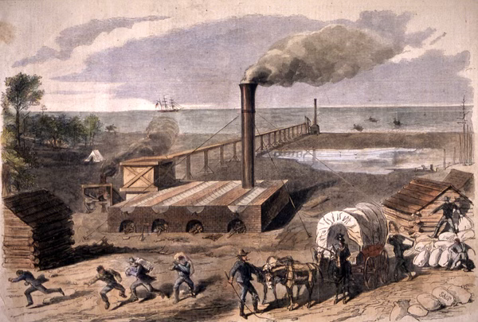
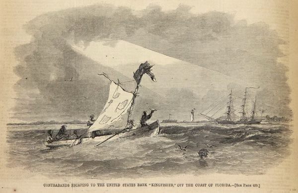

The Kingfisher Destroys a Confederate Saltworks
A Union Navy raid strikes Florida's wartime food supply at St. Joseph Bay, 1862
By Wm. E. McMullen II
September 15, 1862 — A landing party from the Union Navy vessel Kingfisher destroyed a large Confederate saltworks at St. Joseph Bay on Florida's Gulf Coast.

Salt was a military necessity. Before refrigeration, armies and civilians depended upon it to preserve beef, pork and fish. The Union blockade sharply reduced the Confederacy's imported supply, making Florida's long coastline and seawater an increasingly valuable source.
What Kind of Vessel Was the Kingfisher?
The Kingfisher was a bark—also spelled barque—a large sailing vessel generally rigged with square sails on its forward masts and fore-and-aft sails on its aftermost mast. It was not a small patrol boat. The ship measured about 121 feet long, had a 28-foot beam and displaced approximately 451 tons. Its complement was about 97 officers and sailors.
The United States Navy purchased the vessel in Boston in August 1861 and commissioned it that October. Armed with four 8-inch Dahlgren smoothbore guns and assigned to the Gulf Blockading Squadron, the Kingfisher could remain offshore for extended patrols while its smaller boats carried armed landing parties into shallow bays, rivers and coastal inlets.

Intelligence Reaches the Blockade
According to the commanding officer's official report, people identified in Civil War records as “contrabands” informed the Kingfisher about extensive saltworks at St. Joseph Bay. The period term was used by Union forces for enslaved people who escaped to Union lines; many were actively claiming their freedom and are now more clearly described as freedom seekers.
The informants reported that the works were producing between 100 and 150 bushels of salt each day and were still expanding. Their intelligence shows that Black freedom seekers were not merely passive recipients of Union protection. Their local knowledge could directly shape naval operations along Florida's coast.
The September 15 Raid
The Kingfisher had already warned the saltmakers to stop production. When they continued, the vessel moved up St. Joseph Bay at daylight on September 15 and anchored roughly a quarter mile from the works. Sailors could see wagons moving salt and supplies away from the site.
After giving those ashore time to leave, the ship opened fire. Two Black men then appeared on the beach waving a salt bag. They told the sailors that approximately 200 bags of salt and provisions had been removed and that about 80 mounted guerrillas were gathered several miles inland.
A force of approximately 50 sailors went ashore. About 20 formed a defensive picket line while the others smashed the machinery and burned the buildings. The destruction was completed in less than two hours.
The works had reportedly been planned for a final capacity of 500 bushels per day. With salt valued locally at approximately ten dollars a bushel, the raid struck both an essential supply and a valuable Confederate industry.
Florida's Wartime Salt Industry
Confederate saltmakers boiled seawater in large iron kettles until only salt remained. Furnaces, sheds, wagons and stacks of firewood made the works difficult to conceal. Smoke from constant fires could reveal them to ships offshore, and Union sailors repeatedly raided salt operations along Florida's Gulf Coast.
The Florida Department of State describes saltmaking as a multimillion-dollar wartime industry. Raids like the one at St. Joseph Bay were part of a wider Union strategy: the blockade was intended not only to stop ships, but also to disrupt the coastal production networks that helped feed Confederate armies and civilians.
A Contemporary Picture of the Attack
An officer aboard the Kingfisher sent a sketch of the destruction north. A finished illustration based on that eyewitness image appeared in Harper's Weekly on November 15, 1862. It shows the saltworks, fleeing workers, wagons loaded with supplies and the Union ship offshore.
The illustration is especially valuable because it connects the written naval report to a visual record created within weeks of the event. Together, the documents reveal what coastal economic warfare looked like on the ground.
The Lost City of St. Joseph
The raid occurred beside the remains of one of territorial Florida's most ambitious communities. Old St. Joseph had risen rapidly in the 1830s as a rival to Apalachicola. It was linked to the interior by Florida's first steam railroad and hosted the convention that drafted Florida's first state constitution in 1838.
Yellow fever devastated the town in 1841, and a later hurricane damaged what remained. By the Civil War, the once-booming port had largely vanished, but St. Joseph Bay still offered space for industry and coastal trade. Modern Port St. Joe developed later near the same bay.
Why September 15 Matters
The destruction of the St. Joseph Bay saltworks shows that Florida's Civil War was fought through more than famous battles. It was also a struggle over cattle, food preservation, coastal access, intelligence and supply.
The episode connects Union naval power with Florida's natural geography and Confederate dependence upon the state's resources. It also restores Black freedom seekers to the story as participants whose information helped direct the operation.
Sources for Additional Reading
- Florida Memory — Destruction of Saltworks at St. Joseph Bay — The Union commander's September 15, 1862 report and contextual notes from the State Archives of Florida.
- Naval History and Heritage Command — Kingfisher I — The U.S. Navy's official ship history.
- Florida Department of State — Civil War Salt Works — An overview of salt production and Union attacks along Florida's coast.
Previous Entry: September 14 — Richard Keith Call
Explore the daily archive: Discover more events that shaped Florida's communities, culture and history.
Today in Florida History